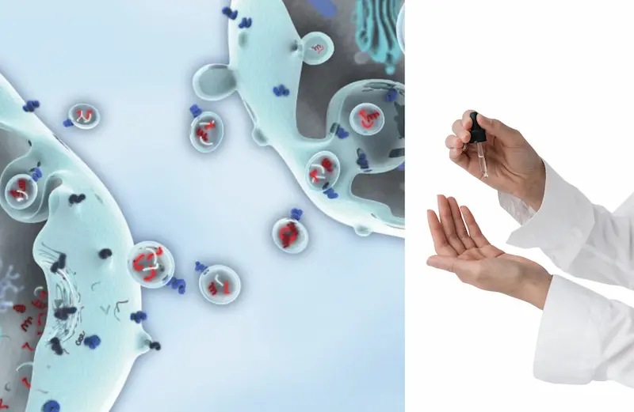
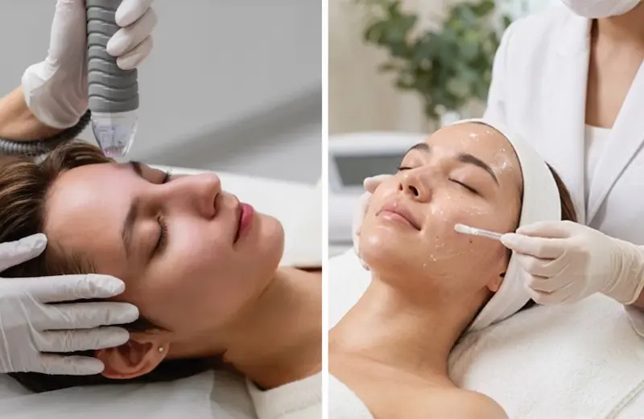

Экзосомы в косметике: научный гид по современному уходу за кожей
Экзосомы (Exosomes) — это небольшие внеклеточные везикулы, которые выделяются клетками и участвуют в межклеточной коммуникации. Они могут переносить различные биологические молекулы, включая белки, липиды и РНК. В косметологии экзосомы привлекают внимание благодаря исследованиям их потенциальной роли в процессах восстановления кожи, регуляции клеточных реакций и поддержании её здорового внешнего вида.
Интерес к экзосомам связан прежде всего с их способностью переносить биологические сигналы между клетками. Учёные изучают, как различные внеклеточные везикулы могут влиять на процессы, связанные с воспалением, восстановлением тканей, синтезом компонентов внеклеточного матрикса и признаками старения кожи. Однако результаты исследований зависят от источника везикул, методов их получения и очистки, состава исследуемого материала и способа применения. Данные лабораторных исследований нельзя автоматически считать доказательством эффективности готовой косметики.
При выборе косметики с экзосомами важно учитывать не только название ингредиента на упаковке, но и происхождение сырья, характеристики используемых везикул, состав INCI, качество производства и наличие исследований именно готового продукта. Термин «экзосомы» также может использоваться в маркетинге для описания различных везикул и других компонентов. Поэтому само наличие такого обозначения не гарантирует определённого эффекта, способности проникать в кожу или клинически подтверждённого результата.
В этом руководстве Estetica Lens мы разберём, что такое экзосомы, как они участвуют в межклеточной коммуникации, какие эффекты для кожи изучаются, чем косметические средства отличаются от профессиональных процедур и что известно об эффективности и безопасности этого направления. Также рассмотрим, на что обращать внимание при выборе косметики и почему важно отличать научные данные от рекламных обещаний.
Посмотреть услугиНе уверены, какое средство выбрать?
Если сложно подобрать уходовую или декоративную косметику самостоятельно, вы можете получить персональную консультацию специалиста.
- ✔ Подбор ухода по типу кожи
- ✔ Подбор декоративной косметики
- ✔ Индивидуальные рекомендации
Полный гид по экзосомам в косметике
Что такое экзосомы?
Что представляют собой эти внеклеточные везикулы, как они образуются и почему привлекли внимание современной косметологии.
Как работают экзосомы?
Как экзосомы участвуют в межклеточной коммуникации и почему учёные изучают их влияние на процессы, происходящие в коже.
Какие преимущества изучаются?
Что известно об исследованиях экзосом в контексте восстановления кожи, её текстуры, упругости и признаков старения.
Откуда получают экзосомы?
Различные источники внеклеточных везикул, особенности их получения и почему происхождение материала имеет значение.
Как найти экзосомы в составе?
Как читать список INCI и почему термин «экзосомы» не всегда позволяет определить состав и свойства продукта.
В каких средствах их используют?
Сыворотки, кремы и другие косметические продукты: какие форматы встречаются на рынке и чем они могут отличаться.
Экзосомы и косметологические процедуры
Чем косметические средства отличаются от профессиональных процедур и почему способ применения влияет на оценку эффективности и рисков.
Часто задаваемые вопросы
Что известно об эффективности экзосом, кому могут быть интересны такие средства и насколько убедительны существующие научные данные.
Что такое экзосомы и почему о них говорят в косметике?
Экзосомы — одно из направлений, которое привлекает всё больше внимания в современной косметологии. Их изучают в связи с восстановлением кожи, улучшением её внешнего вида и возрастными изменениями. Поэтому экзосомы можно встретить в описаниях некоторых современных косметических средств и профессиональных процедур.
Простыми словами, экзосомы — это очень маленькие пузырьки, которые выделяются клетками и помогают им обмениваться сигналами. Они переносят различные молекулы, участвующие в клеточных процессах. Учёные исследуют, как эти сигналы могут влиять на реакции кожи и процессы её восстановления.
Потенциальный интерес к экзосомам связан с их возможной ролью в процессах, влияющих на состояние кожи, её текстуру и упругость. Однако результаты исследований зависят от происхождения экзосом, способа их получения и применения. Не каждое средство с маркировкой «экзосомы» обладает доказанной эффективностью.
Важно помнить: экзосомы — перспективное направление исследований, но пока не универсальное решение для омоложения кожи. При выборе продукта стоит обращать внимание на его состав, происхождение компонентов, качество и достоверность заявлений производителя.

Как работают экзосомы?
Чтобы понять интерес к экзосомам, представьте, что клетки могут обмениваться небольшими сообщениями. Экзосомы — это микроскопические пузырьки, которые переносят различные молекулы от одной клетки к другой. Таким образом они участвуют в межклеточной коммуникации и могут влиять на определённые клеточные процессы.
1. Передают биологические сигналы. Экзосомы могут содержать белки, липиды и РНК. Попадая к другим клеткам, они способны влиять на их активность. Учёные изучают, как эти механизмы могут участвовать в процессах, связанных с воспалением и восстановлением тканей.
2. Изучаются в контексте восстановления кожи. Исследователи рассматривают потенциальное влияние некоторых типов внеклеточных везикул на клеточные реакции, связанные с состоянием кожи, её текстурой и упругостью. Однако результаты лабораторных исследований ещё не означают, что любой косметический продукт с экзосомами даст такой же эффект.
3. Результат зависит от самого продукта. Источник экзосом, способ их получения и очистки, состав и технология производства могут существенно различаться. Кроме того, важно учитывать, как средство применяется и насколько хорошо изучена именно его формула. Поэтому нельзя ожидать одинакового действия от всех продуктов с обозначением «экзосомы».
Что это значит на практике? Экзосомы представляют интерес для косметологии благодаря способности участвовать в межклеточной коммуникации. Но эффективность готовых косметических средств требует отдельных доказательств. При выборе продукта важно оценивать не только обещания производителя, но и происхождение компонентов, качество формулы и данные исследований.
Какие преимущества экзосом для кожи изучаются?
Экзосомы привлекают внимание исследователей благодаря своей роли в межклеточной коммуникации. Учёные изучают, могут ли определённые типы внеклеточных везикул влиять на процессы, связанные с восстановлением кожи, её внешним видом и реакцией на повреждения. При этом результаты зависят от происхождения материала, его состава и способа применения.
1. Поддержка процессов восстановления кожи. Некоторые исследования рассматривают участие экзосом в передаче сигналов, связанных с реакциями клеток и восстановлением тканей. Однако результаты лабораторных и клинических исследований различаются, поэтому нельзя считать, что любой продукт с экзосомами ускоряет заживление кожи.
2. Улучшение текстуры и упругости. Исследуется возможное влияние некоторых типов внеклеточных везикул на клеточные процессы, связанные с внеклеточным матриксом, в том числе с коллагеном. Это направление представляет интерес в контексте возрастных изменений, но выраженный эффект для конкретного косметического средства должен подтверждаться исследованиями именно этого продукта.
3. Влияние на воспалительные реакции. В зависимости от источника и состава экзосомы могут передавать сигналы, влияющие на активность клеток иммунной системы. Учёные изучают эти механизмы в контексте воспалительных процессов. Однако действие может различаться, и экзосомы нельзя считать универсальным средством от раздражения или воспаления кожи.
4. Потенциальное влияние на признаки старения. Исследования рассматривают, могут ли определённые внеклеточные везикулы влиять на процессы, связанные с клеточным старением и состоянием тканей. Это перспективная область, но пока недостаточно оснований обещать, что косметика с экзосомами гарантированно уменьшает морщины или восстанавливает молодость кожи.
5. Перспективы применения после косметологических процедур. Отдельное направление исследований связано с использованием некоторых препаратов на основе внеклеточных везикул в профессиональной косметологии. Эффективность и безопасность зависят от конкретного материала, метода применения и качества доказательств. Использование после процедур, нарушающих кожный барьер, требует особой осторожности и рекомендаций квалифицированного специалиста.
Что важно знать? Перечисленные преимущества являются направлениями исследований, а не гарантированными результатами. Данные о конкретных экзосомах нельзя автоматически переносить на все косметические средства. При выборе продукта обращайте внимание на происхождение ингредиентов, качество производства, исследования готовой формулы и информацию о безопасности. Само слово «экзосомы» на упаковке не доказывает эффективность средства.
Откуда получают экзосомы?
Экзосомы образуются внутри клеток и выделяются во внеклеточную среду. Для исследований и разработки косметических продуктов внеклеточные везикулы могут получать из разных биологических источников. Их происхождение имеет значение, поскольку состав и свойства материала зависят от типа клеток, условий культивирования и технологии обработки.
1. Клеточные культуры человека. В научных исследованиях изучаются внеклеточные везикулы, выделенные из культур различных типов человеческих клеток, в том числе мезенхимальных стромальных клеток. Их рассматривают из-за возможного участия в передаче биологических сигналов. Такие материалы требуют строгого контроля происхождения, очистки, качества и безопасности.
2. Растительные источники. Из растений получают внеклеточные везикулы и другие наночастицы, которые иногда называют растительными экзосомами. В строгом научном смысле не все такие частицы можно однозначно классифицировать как экзосомы. Исследуется их состав и потенциальное применение в средствах для ухода за кожей, однако доказательства эффективности зависят от конкретного материала и готовой формулы.
3. Другие биологические источники. В научной литературе рассматриваются внеклеточные везикулы, полученные из разных типов клеток и биологических материалов. Их свойства могут существенно отличаться, поэтому результаты исследования одного источника нельзя автоматически переносить на другой.
4. Лабораторное получение и очистка. После получения биологического материала везикулы отделяют и очищают с помощью специальных технологических методов. Важны контроль чистоты, состава, стабильности и возможных загрязнений. Термин «экзосомы» в рекламном описании сам по себе не подтверждает, что продукт содержит выделенные и надлежащим образом охарактеризованные экзосомы.
На что обратить внимание? При выборе косметики полезно проверить, указывает ли производитель источник ингредиента, его состав и способ получения, а также предоставляет ли данные о качестве и безопасности готового продукта. Особенно важно различать косметические средства для наружного применения и материалы, предназначенные для профессиональных процедур: требования к их безопасности и применению могут различаться.
Как найти экзосомы в составе косметики?
Найти экзосомы в составе косметического средства не всегда просто. В отличие от многих привычных ингредиентов, у них нет одного универсального обозначения INCI, которое гарантированно использовалось бы всеми производителями. Названия могут зависеть от происхождения материала, его характеристик и правил маркировки.
1. Проверьте полный список INCI. Изучите перечень ингредиентов на упаковке или официальном сайте бренда. Если производитель заявляет об использовании экзосом, поищите дополнительную информацию о соответствующем компоненте. Само слово «Exosomes» в рекламном описании ещё не подтверждает, что продукт содержит именно охарактеризованные экзосомы.
2. Обратите внимание на названия, связанные с источником. В описаниях продуктов могут встречаться термины, указывающие на растительное происхождение, клеточные культуры или внеклеточные везикулы. Однако названия вроде «Plant Exosomes» или «Exosome Complex» не являются универсальными обозначениями INCI и сами по себе не позволяют подтвердить состав или свойства ингредиента.
3. Не путайте экзосомы с другими активными компонентами. Пептиды, факторы роста, ферменты, растительные экстракты и продукты клеточных культур могут использоваться в косметике с похожими маркетинговыми обещаниями, но не являются автоматически экзосомами. Наличие таких ингредиентов не доказывает присутствие внеклеточных везикул.
4. Изучите информацию производителя. Надёжный производитель должен по возможности указывать происхождение материала, способ его получения, назначение и данные о безопасности. Если заявлены клинические результаты, полезно выяснить, изучался ли именно готовый продукт или только отдельный ингредиент в лабораторных условиях.
5. При необходимости запросите уточнение у бренда. Если состав не даёт ясного ответа, спросите производителя, какой именно компонент обозначен как экзосомы, как он идентифицирован и какие данные подтверждают его наличие и качество. Это особенно важно для средств с высокой стоимостью и продуктов, предназначенных для профессионального применения.
Главное: не существует одного универсального ключевого слова, по которому можно безошибочно найти все экзосомы в INCI. Оценивайте полный состав, документацию производителя и доказательства безопасности и эффективности. Маркетинговая надпись «с экзосомами» сама по себе не является гарантией результата.
В каких косметических средствах используют экзосомы?
Экзосомы и другие внеклеточные везикулы всё чаще упоминаются в разработках для современной косметологии. Их можно встретить в описаниях сывороток, кремов, масок и профессиональных средств для ухода за кожей. Однако наличие такого обозначения не всегда означает, что продукт содержит подтверждённые экзосомы, а эффективность зависит от конкретной формулы и качества исследований.
1. Сыворотки для лица. Такие средства часто позиционируют для ухода за кожей с неровной текстурой, тусклым тоном или видимыми признаками возраста. Сыворотки могут содержать компоненты, заявленные как экзосомы, но ожидаемый эффект следует оценивать по данным о готовом продукте, а не только по рекламным обещаниям.
2. Кремы для увлажнения и ухода за кожей. Экзосомы могут упоминаться среди компонентов средств, направленных на поддержание увлажнённости, мягкости и общего внешнего вида кожи. При этом увлажняющий эффект крема во многом зависит от всей формулы: например, от содержания увлажнителей, смягчающих веществ и компонентов, поддерживающих кожный барьер.
3. Маски и интенсивные уходовые средства. Некоторые производители включают компоненты, позиционируемые как экзосомы, в маски и средства для дополнительного ухода. Такие продукты могут дополнять привычную косметическую рутину, но нет оснований считать все средства этой категории одинаково эффективными.
4. Профессиональные косметологические продукты. Материалы на основе внеклеточных везикул изучаются и применяются в некоторых профессиональных направлениях ухода. Важно различать обычные косметические средства для наружного нанесения и препараты, предназначенные для использования в рамках процедур. Их безопасность, доказательная база и допустимый способ применения могут существенно различаться.
5. Средства после косметологических процедур. Некоторые продукты с подобными компонентами рекламируются для ухода после профессиональных процедур. Однако наносить средство на повреждённую кожу или использовать его после процедур, нарушающих кожный барьер, следует только при наличии соответствующих указаний производителя и рекомендаций квалифицированного специалиста.
Как выбрать подходящее средство? Учитывайте тип и состояние кожи, полный состав, происхождение заявленного ингредиента и доступные данные о безопасности. Если производитель обещает заметное омоложение или быстрое восстановление кожи, проверьте, подтверждены ли эти заявления исследованиями именно готового продукта.

Экзосомы и косметологические процедуры
Экзосомы и другие внеклеточные везикулы изучаются как потенциальное направление современной косметологии. Особый интерес вызывает их возможное влияние на клеточные процессы, связанные с восстановлением тканей и состоянием кожи. Некоторые специалисты предлагают средства с такими компонентами в сочетании с профессиональными процедурами, однако эффективность и безопасность зависят от конкретного продукта и способа его применения.
1. Микронидлинг. Процедура создаёт в коже множество микроканалов с помощью специальных игл. Некоторые средства, позиционируемые как экзосомные, предлагают использовать после микронидлинга. Однако нанесение на кожу с нарушенным барьером требует особой осторожности: не каждый косметический продукт предназначен для такого применения, а доказательства дополнительной пользы ограничены и зависят от конкретного препарата.
2. Лазерные и другие аппаратные процедуры. В исследованиях рассматривается возможность применения определённых препаратов на основе внеклеточных везикул в контексте восстановления кожи после некоторых процедур. Но результаты нельзя переносить на все виды лазерного воздействия, аппаратные методики или продукты с надписью «экзосомы». Решение о совместном применении должен принимать специалист, учитывая состояние кожи и инструкцию к конкретному средству.
3. Уход после интенсивных процедур. После профессионального воздействия кожа может временно стать более чувствительной. В этот период обычно важны бережный уход, поддержание кожного барьера и защита от солнца в соответствии с рекомендациями специалиста. Средства с экзосомами не заменяют базовый восстановительный уход и не должны автоматически считаться более эффективными.
4. Инъекционные методики. Препараты на основе внеклеточных везикул иногда рекламируют для инъекционного применения. Однако инъекционное введение отличается от наружного использования косметики и связано с дополнительными рисками. Не следует вводить косметические средства в кожу или использовать их для инъекций, если они специально не разрешены для такого применения в соответствующей юрисдикции.
Что необходимо учитывать? Термин «экзосомы» может обозначать материалы с разным происхождением, составом и степенью изученности. Перед процедурой важно уточнить, какой именно продукт используется, как подтверждены его качество и безопасность, предназначен ли он для выбранного способа применения и какие клинические данные подтверждают заявленные результаты.
Важное предупреждение. Не все продукты с экзосомами одобрены для медицинского или инъекционного применения. Не используйте непредназначенные для этого средства на повреждённой коже и не соглашайтесь на инъекции неизвестных препаратов. Обсудите возможные риски, противопоказания и альтернативы с квалифицированным медицинским специалистом.
Вывод: сочетание экзосомных препаратов с косметологическими процедурами остаётся развивающимся направлением. Потенциальные преимущества требуют дальнейшего изучения, поэтому выбирать процедуру следует исходя из доказательств для конкретного продукта, его безопасности и профессиональных рекомендаций, а не только из рекламных обещаний.
Часто задаваемые вопросы об экзосомах
Что такое экзосомы в косметике?
Экзосомы — это небольшие внеклеточные везикулы, которые выделяются клетками и участвуют в межклеточной коммуникации. В косметологии их изучают благодаря возможной роли в процессах, связанных с состоянием и восстановлением кожи. Однако эффективность конкретного косметического средства должна подтверждаться отдельно.
Как экзосомы влияют на кожу?
Исследователи изучают их потенциальное влияние на клеточные реакции, восстановление тканей, воспалительные процессы и состояние внеклеточного матрикса. Результаты зависят от происхождения везикул, их состава и способа применения. Не все заявленные косметические эффекты подтверждены качественными клиническими исследованиями.
Помогают ли экзосомы от морщин?
Потенциальное влияние некоторых внеклеточных везикул на процессы, связанные со старением кожи, изучается. Однако пока нельзя утверждать, что любое средство с экзосомами уменьшает морщины или обеспечивает выраженный омолаживающий эффект.
Откуда получают экзосомы для косметологии?
В исследованиях используют внеклеточные везикулы из разных источников, включая клеточные культуры человека и растительный материал. Не все частицы, которые продаются под названием «экзосомы», относятся к одной и той же категории. Источник и характеристики ингредиента следует уточнять у производителя.
Как найти экзосомы в составе INCI?
Единого универсального обозначения INCI для всех материалов, называемых экзосомами, нет. Проверьте полный список ингредиентов и описание производителя. Если происхождение компонента и его идентичность неясны, запросите дополнительную информацию о составе, способе получения и контроле качества.
В каких косметических средствах используют экзосомы?
Компоненты, позиционируемые как экзосомы, встречаются в описаниях сывороток, кремов, масок и профессиональных средств. Само наличие такого обозначения не гарантирует эффективность: важны формула, качество ингредиента и доказательства для готового продукта.
Можно ли применять экзосомы после микронидлинга или лазера?
Некоторые продукты предлагают для использования после профессиональных процедур, но не каждое средство подходит для кожи с нарушенным барьером. Применение должно соответствовать инструкции к конкретному продукту и рекомендациям квалифицированного специалиста. Не наносите обычную косметику на повреждённую кожу, если такой способ применения не предусмотрен.
Безопасны ли средства с экзосомами?
Безопасность зависит от происхождения материала, чистоты, состава, качества производства и способа применения. Необходимо учитывать возможные реакции кожи и данные о безопасности именно готового продукта. Средства для наружного нанесения нельзя автоматически считать подходящими для инъекций.
Подходят ли экзосомы для чувствительной кожи?
Универсального ответа нет: переносимость зависит от всей формулы, а не только от заявленного наличия экзосом. При чувствительной коже изучите состав, избегайте средств с известными для вас раздражителями и при необходимости проконсультируйтесь с дерматологом.
Стоит ли выбирать косметику с экзосомами?
Экзосомы представляют интересное направление исследований, но не являются гарантией омоложения или восстановления кожи. Выбирайте средство по потребностям кожи, прозрачности информации о составе, качеству производителя и наличию доказательств эффективности готового продукта.
Поделитесь своим опытом
Ваш отзыв поможет другим понять, подойдёт ли этот ингредиент именно им. Даже 1–2 предложения будут полезны
Не знаете, что написать? Выберите варианты — текст сформируется автоматически
Мы публикуем только реальные отзывы. Реклама и ссылки не проходят модерацию.
Отправляя комментарий, вы соглашаетесь с Политикой конфиденциальности.